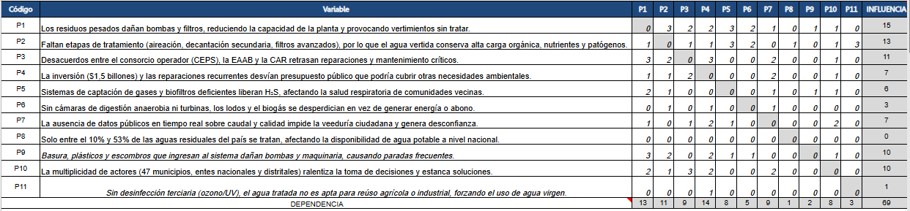
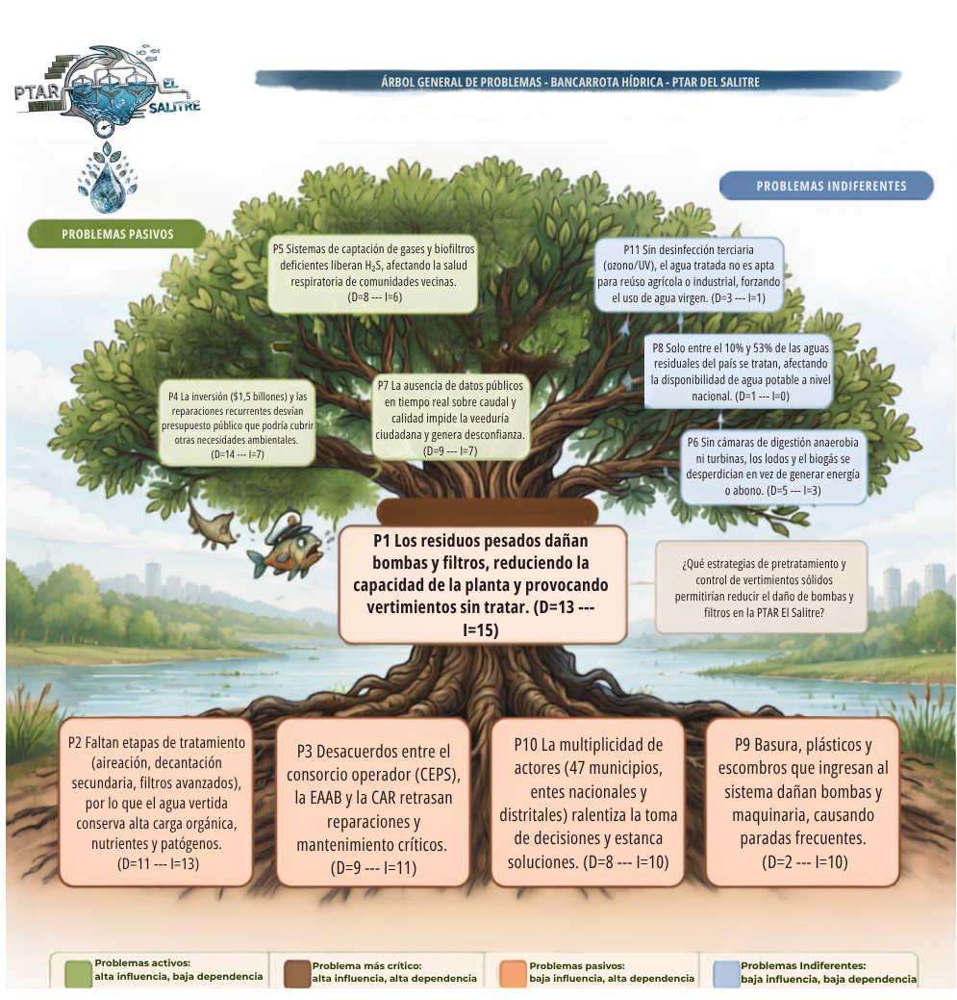

Situación ambiental
Lectura de la ficha sobre la PTAR El Salitre y la contaminación del río Bogotá.
COLEGIO GERARDO MOLINA RAMÍREZ · CIENCIAS NATURALES
PTAR El Salitre y la ruptura del ciclo hidrológico del río Bogotá
Una investigación sobre las fallas técnicas, institucionales y ambientales de la PTAR El Salitre, interpretadas mediante la Matriz de Vester, el ciclo hidrológico y el concepto de capital natural.
01 · CONTEXTO
Una Planta de Tratamiento de Aguas Residuales (PTAR) es una infraestructura construida para limpiar el agua usada por hogares, industrias y comercio antes de devolverla al río o permitir su reúso.
El proceso se organiza en tratamiento preliminar y primario, tratamiento secundario biológico y, cuando existe, tratamiento terciario de desinfección y reúso. Cuanto más completa sea la cadena, más segura es la reintegración del agua al ciclo natural.
02 · RUTA METODOLÓGICA
Lectura de la ficha sobre la PTAR El Salitre y la contaminación del río Bogotá.
11 problemáticas calificadas de 0 a 3 según su influencia sobre las demás.
Contraste con EAAB, CAR, Secretaría Distrital de Ambiente, Concejo, Minvivienda y prensa.
Aplicación del ciclo hidrológico y del concepto de capital natural.
Conclusiones y organización de contenidos para el sitio web del proyecto.
03 · MATRIZ DE VESTER
La Matriz de Vester permite separar los problemas según su motricidad (influencia) y dependencia. El resultado muestra un núcleo crítico dominado por cuatro variables: P1, P2, P3 y P10.
Causan y son causados a la vez. Constituyen el corazón del sistema.
Casi no depende de otros problemas y ofrece la mayor palanca de intervención.
Son principalmente consecuencias acumuladas de los problemas centrales.
Tienen poca conexión causal con la red principal, aunque no dejan de ser importantes.


Dañan bombas y filtros, reducen la capacidad y provocan vertimientos sin tratar.
La ausencia de aireación, decantación secundaria y filtros avanzados deja alta carga orgánica y patógenos en el agua.
Los desacuerdos entre CEPS, EAAB y CAR retrasan reparaciones y mantenimiento críticos.
La participación de 47 municipios y múltiples entidades ralentiza decisiones y mantiene conflictos.
Ingresan al sistema, dañan bombas y maquinaria y causan paradas frecuentes.
Desvían presupuesto público que podría atender otras necesidades ambientales.
Liberan H₂S y afectan la salud respiratoria de comunidades vecinas.
Impide la veeduría ciudadana y genera desconfianza.
Se desperdician lodos y biogás que podrían aprovecharse como energía o abono.
Es un dato de contexto nacional, con relación causal directa limitada dentro de esta red.
El agua no es apta para reúso agrícola o industrial y se continúa usando agua virgen.
=SUM(C20:M20); esto no cambia la clasificación de los problemas.
04 · ÁRBOL DE PROBLEMAS
El árbol organiza la red en raíces, tronco y consecuencias. P1 aparece como problema central, mientras P2, P3, P10 y P9 alimentan el núcleo; P4, P5, P7, P6, P8 y P11 muestran efectos y problemas de menor conexión causal.
Saltar a las conclusiones →
05 · CICLO HIDROLÓGICO
El ciclo hidrológico integra evaporación, precipitación, infiltración y escorrentía. Una PTAR funcional debería contribuir a que el agua regrese al sistema con una calidad segura; cuando falla, se rompe ese cierre.
P1 y P2 se traducen en agua con materia orgánica y patógenos que vuelve al río Bogotá.
Torca y La Conejera reciben presión sobre funciones naturales de regulación hídrica.
P6 y P11 impiden aprovechar lodos y aplicar desinfección terciaria para ampliar el reúso.
P3 y P10 mantienen la falla institucional desde 2021, según el enfoque de la investigación.
06 · CAPITAL NATURAL
No. La investigación la clasifica como capital construido: una obra de ingeniería fabricada por el ser humano y dependiente de mantenimiento, contratos y decisiones administrativas.
Su función sí está al servicio del capital natural: proteger el río, los humedales, el agua y los servicios ecosistémicos de la cuenca. El problema es que hoy esa protección sigue siendo incompleta.
07 · RESULTADOS
La PTAR Salitre trata actualmente cerca del 30 % de las aguas residuales de Bogotá provenientes de las cuencas de Salitre y Torca.
El documento reporta que durante su operación se ha evitado que cerca de 70 mil toneladas lleguen al río Bogotá.
También se reportan cerca de 88 mil toneladas de materia orgánica evitadas en el río.
Salitre + Canoas podrían reducir hasta en un 90 % la carga contaminante orgánica que recibe el río Bogotá.
El porcentaje nacional de aguas residuales tratadas se sitúa, según fuente y año, entre 42 % y 53 %.
La investigación recoge una meta oficial nacional de 68,6 % para 2030.
08 · CONCLUSIONES
La Matriz de Vester ubica P1, P2, P3 y P10 como problemas críticos, mostrando que la dimensión técnica está ligada a la disputa institucional.
Basuras y residuos sólidos dañan la maquinaria y apuntan hacia la gestión de residuos y la educación ambiental aguas arriba.
P4, P5 y P7 reflejan costos sociales y económicos que crecen mientras no se resuelven los problemas críticos.
La contaminación crónica aparece justo en el punto donde la infraestructura debería devolver agua segura al sistema hídrico.
La PTAR es capital construido al servicio del capital natural; para cumplir esa función necesita operación eficaz y coordinación institucional.
09 · REFERENCIAS
Martínez, Y. S. M., Martin, A. F. A., & Albarracín, J. M. Q. (2025). Análisis de la rendición de cuentas para el desarrollo de proyectos sociales. El caso de la PTAR.
Sánchez Melo, M., & Ortiz, F. (2016). Evaluación del conflicto ambiental generado por las obras de ampliación de la PTAR El Salitre.
RTVC (2022); Revista Semana (2022); El Espectador (2022); CAR Cundinamarca (2018).
Acueducto de Bogotá–EAAB; Bogotá.gov.co (2024); El Tiempo (2023); El Espectador (2022); Concejo de Bogotá (2026); Secretaría Distrital de Ambiente (2025); Minvivienda–SAVER (2024); Radio Nacional de Colombia; Instituto del Agua (2024); Costanza & Daly (1992); Repsol (2026).